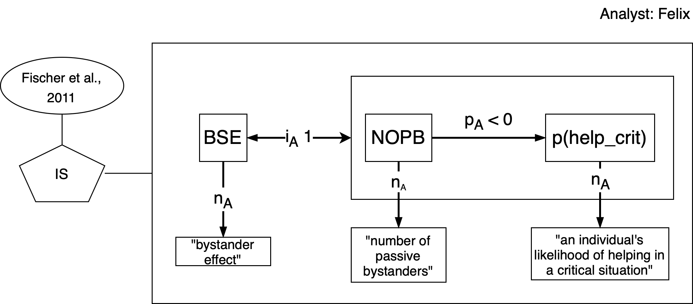
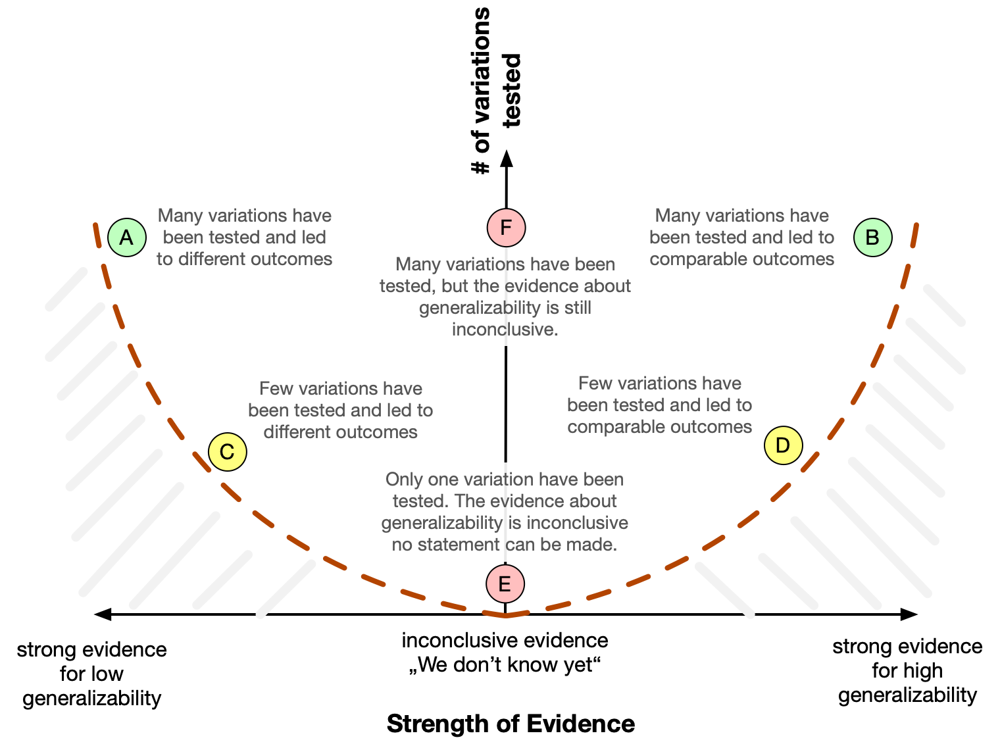
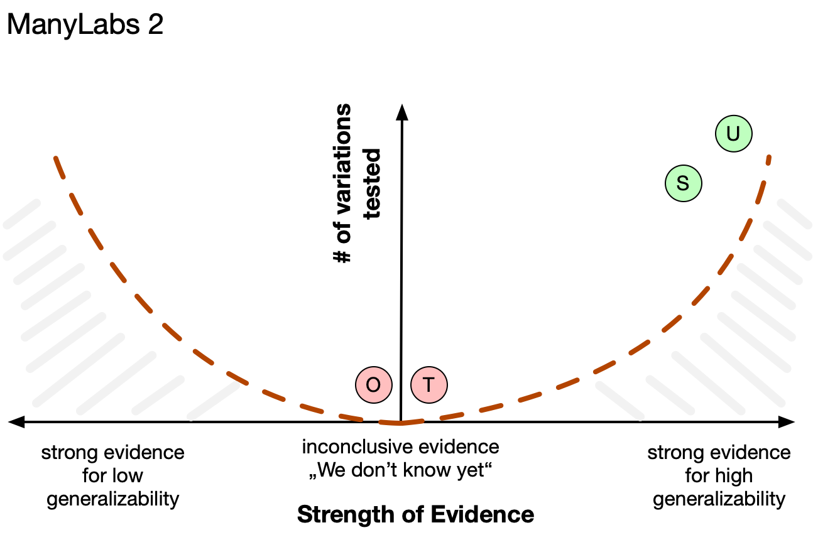

Applying VAST to an existing theory
Visual Argument Structure Tool (VAST) by Leising, Grenke & Cramer
![]()
Steps to formalize an existing verbal theory
Agenda for this presentation
- Step 1: Choose your starting point
- Step 2: Limit your scope
- Step 3: Collect definitions of constructs, with reference to the literature.
- Step 4: Distill a (consensus or working) definition for each construct, add relationships
- Step 5: Collect robust empirical phenomena
- Step X: Choose a specific formalization
Step 1: Choose your starting point
Formalization approaches can differ in their starting point (which often are not clear-cut distinct):
- Start with an existing verbal theory, formalize it as it is.
- Interpret the verbal statements, make them more precise, visualize as a VAST display
- Ignore empirical evidence (even if a hypothesized effect has already been empirically rejected, keep it in the model)
- Do not fix inconsistencies, do not improve the theory: We want to make explicit what the original authors had in mind with their theory.
- Start with robust phenomena (TCM approach), invent an explanatory theory and formal model
- Ignore existing verbal theories (which might be hard once you know them)
- This will (potentially) lead to an alternative theory/model to the existing theory
Step 1: Choose your starting point
A-B Mixture Model (for formalization attempts)
- Starting point is an existing narrative theory
- We soon will detect inconsistencies. For successfully modelling the theory, we have to resolve them, e.g. by:
- Deciding on one specific construct definition
- Synthesizing multiple definitions
- Only use robust phenomena as explanatory targets
- Select only components of the theory that are theoretically central to explain your explanatory target.
- The result will be a reduced and refined theory, that is inspired by the original theory but not identical to it.
Step 2: Limit your scope
Most theories in psychology are too fuzzy and broad to be formalized in one round. We restrict the scope of the theory to keep modelling feasible:
- Define the scope of original literature that is used as basis for the formalization.
- Limit the number of phenomena that your model is supposed to explain. Focus on phenomena that are empirically robust.
- Limit the number of constructs and their relationships, add complexity later.
- Start with the smallest number of constructs necessary to explain your explanatory target.
- Maybe exclude entire sections of a theory.
- What is your focal outcome variable (DV)? What are the focal predictors or interventions?
Step 3: Collect definitions of constructs
Construct Source Table
- Collect quotes of definitions of constructs and their relationships from the literature.
- Make them atomic (i.e., split up long quotes into their basic components).
- Assign a unique ID to each statement.
This table will be called the Construct Source Table, as it collects the original sources for the definitions of the constructs.
| ID | Type | Short name | Quote | Reference | rel. type (n, p, i, r, …) | Comment | Incl. (Y/N) |
|---|---|---|---|---|---|---|---|
| A | P | bystander effect | “The bystander effect refers to the phenomenon that an individual’s likelihood of helping decreases when passive bystanders are present in a critical situation.” | Fischer et al. (2011), p. 517 | n, p | Y | |
| B | |||||||
| … |
- Type is one of: Phenomenon, Concept, Relationship
- Included (Y/N): Is this definition included in the VAST display?
Step 4: Distill a working definition for each construct, add relationships
- Draw a VAST display with a naming
nrelationship for each construct. - Use the ID from the Construct Source Table as subscript for each relationship. This way your claims in the VAST display can be easily backlinked to the original sources in the literature.
- The small “A” subscript indicates that all relationships in this display are derived from the quote with ID “A” in the Construct Source Table.

Step 5: Collect robust empirical phenomena
Step 5: Collect robust empirical phenomena
Robustness of phenomena has two dimensions:
- Generalizability (cf. UTOS framework): The effect has been shown for different Units, with different operationalizations of Treatments and Outcomes, and in multiple Settings.
- Strong empirical evidence for each/many of the generalizations.
Step 5: Collect robust empirical phenomena
Practically, you should do the following steps to assess these two dimensions:
- Search for meta-analyses that report on phenomena with our focal variables → Only if no meta-analysis is available, or it is not helpful: Do a broader literature search for primary studies.
- Assess the robustness of the phenomena along the two dimensions:
- How generalizable is it? Go through all four UTOS dimensions and evaluate which types of generalization have been shown across studies.
- How strong is the evidence? (e.g., based on number k of studies in a meta-analysis, strength of evidence, risk of bias)
- Write a paragraph that makes an overall assessment of the robustness of each phenomenon and gives a clear and explicit answer: “The phenomenon can (not) be considered robust because, …”. Refer to the two dimensions of robustness and give references that back up your claim.
Step 5: Collect robust empirical phenomena
How to jointly assess “strength of evidence” and “generalizability”
When you assess the generalizability, you should distinguish three prototypical epistemic states:
- “I know that it is generalizable.” → strong evidence for \(H_1\)
- “I know that it is not generalizable.” → strong evidence for \(H_0\)
- “I do not know whether it is generalizable or not - with the given empirical evidence I cannot answer this question.” → inconclusive evidence
When is the strength of evidence strong? If …
- you have many studies,
- which are methodologically sound (i.e., valid),
- and show (at least in sum) a decisive statistical result into either direction (i.e., either for a difference, or for a null effect)
Step 5: Collect robust empirical phenomena

General principle: We can only make statements about stuff that we actually studied.
We describe six prototypical examples:
- (A): strong evidence that the phenomenon is not generalizable.
- (B): strong evidence that the phenomenon is generalizable - at least within the space of sampled variations.
- (C): weak evidence that the phenomenon is not generalizable.
- (D): weak evidence that the phenomenon is generalizable. As we don’t know about the untested variations, the evidence principally cannot be very strong.
- (E): principally unknowable whether the result generalizes to other variations. We can only conclude that we cannot conclude anything about generalizability.
- (F): evidence is inconclusive. There are descriptive differences between variations, but they are small, and it is not clear if these differences are statistically significant and substantial.
Step 5: Collect robust empirical phenomena
Applying the heuristic to ManyLabs2
All four UTOS dimensions can get an independent assessment. Consider the ManyLabs2 study:
The identical experiment (except translation of materials) has been administered online in very diverse samples (at least diverse with respect to nationality and cultural background).
Hence, there was high variation in the U(nits) and the S(ettings) dimensions, but very low variation in the T(reatment) and O(utcome) dimension.
Non-zero effects could be found with remarkably low variability across samples: “Cumulatively, variability in the observed effect sizes was attributable more to the effect being studied than to the sample or setting in which it was studied” (quoted from the Abstract).
Step 5: Collect robust empirical phenomena
Applying the heuristic to ManyLabs2

Hence, we have strong evidence for high generalizability for the U and the S dimension, but we cannot make a conclusion concerning the T and the O dimensions, as they lacked the necessary variation in the study.
Step 5: Collect robust empirical phenomena
Example: Jet lag (adapted from Keno Mersmann)
“No meta-analyses could be identified, that directly investigated the robustness of jet lag. Instead, three standalone studies shall be reviewed, investigating generalizability across the four UTOS dimensions.
As research units, an Olympic team support staff (n = 9; Rossiter et al., 2022), a professional male football team (n=23, Fowler et al., 2017) and master triathletes (n = 12, Stevens et al., 2018) were investigated. These samples were extremely small and relatively homogeneous, consisting mainly of men and an over-proportion of professional athletes. We have no evidence about the generalizabilkity across the units dimension.
The transmeridian flights are considered as treatments in this context. The sample from Rossiter et al. (2022) underwent a 24-h eastward travel over 8 time zones (Ireland- Japan), the sample from Fowler et al. (2017) experienced a 19-h eastward flight over 11 time zones (Australia-Brazil) and the sample from Stevens et al. (2018) an northeastward journey with a mean travel time of 22.6-h of which 11.5-h were spent flying (Australia-US). While these show some variation in treatment strength, they are homogeneous in the sense that no short flights were reported, and all were eastward journeys. The there is only weak evidence for generalizability across the treatment dimension.
[Paragraph on outcomes omitted …]
As to the settings investigated, […] all participants were in some way part of a high stakes competition and within training camps during the study period, which is a very narrow and non-typical situation.
In conclusion, based on the review of three studies, we have only inconclusive evidence whether jet lag can be considered a robust phenomenon. However, it seems reasonable to assume that jet lag is vastly more robust, and that this contradiction might mainly arise from the small number of studies reviewed here.”
Step X: Choose a specific formalization
“Diffusion of responsibility” (Darley & Latané, 1968): The presence of others reduces the likelihood of helping behavior in emergencies.
But how is it reduced exactly? (see Forsyth et al., 2002):
- Linear relationship?
- A reduction in personal responsibility as groups increase in size but an eventual leveling off in larger groups?
- Where does responsibility go when it diffuses in the group? Does it diffuse equally, with each member getting an equal portion, or is it concentrated on certain individuals?
End
Contact
- @nicebread@scicomm.xyz
- ed.uml.ysp@tdorbneohcs.xilef
- https://www.nicebread.de
- https://github.com/nicebread